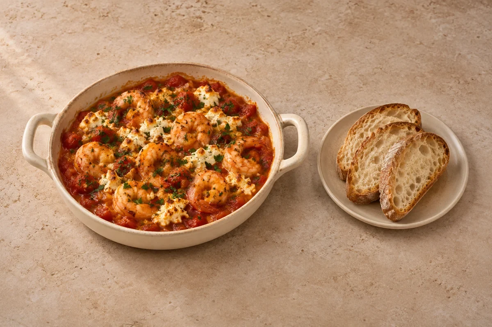

Spanish garlic prawns & butter beans
Side included in the recipe.
Comfort
Juicy king prawns baked in a thick tomato, garlic and oregano sauce, finished with feta and parsley. Crusty bread is included for the sauce.
Estimated total: About 40 min totalSides included in the recipe.
Ingredient quantities update automatically

Cool promptly and refrigerate covered within 2 hours. Eat within 48 hours, or sooner if the prawn packet gives a shorter limit. Keep the bread separate.
Best cooked fresh. Freeze the tomato sauce before adding raw prawns and feta; defrost fully in the fridge, reheat the sauce, then add those ingredients and bake as directed.
Reheat finished leftovers only once until steaming hot throughout. Prawns can toughen during reheating, so heat gently but thoroughly.
For a vegetarian variation, replace the prawns with a drained 400 g tin of butter beans and choose vegetarian feta. If substituting ready-cooked prawns, add near the end only to heat through and do not reheat that version again.
Cool cooked leftovers in small portions and refrigerate within 2 hours. Keep the fridge at 0–5°C and the freezer around −18°C. Freeze suitable leftovers promptly. Defrost fully in the fridge and use within 24 hours. Reheat only once, until steaming hot all the way through. Follow any shorter use-by or opened-pack instructions; using older cooked ingredients does not restart their storage time.
Food-safety guidance: Food Standards Agency: chilling and freezing · reheating leftovers.